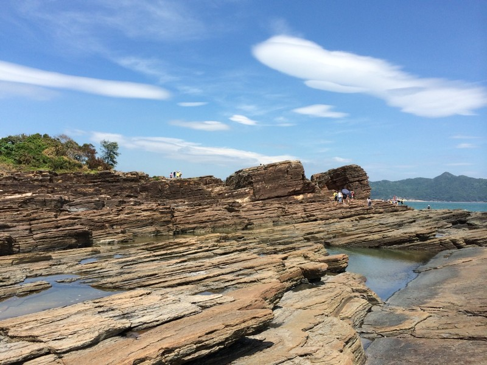
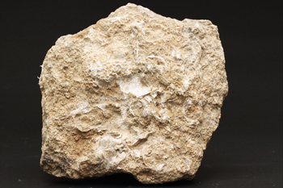
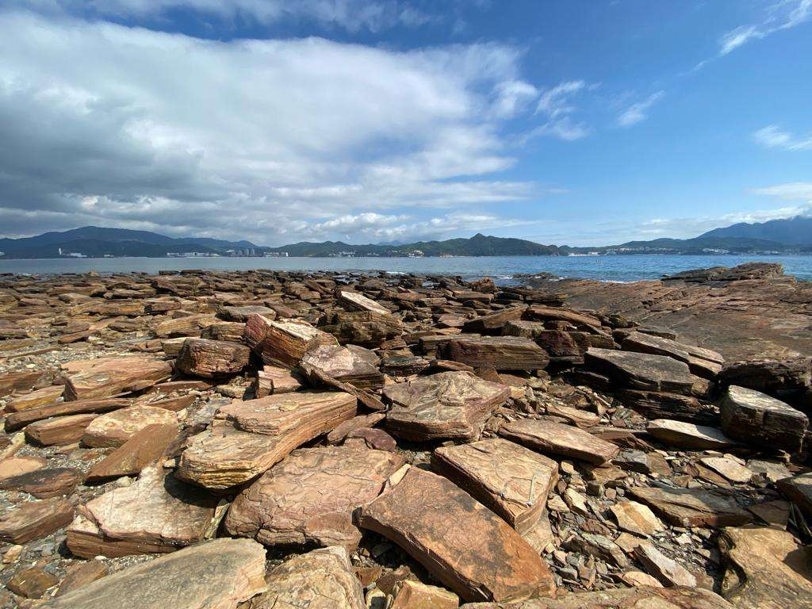

|  https://ettchk.wordpress.com/2018/01/16/3267/ |
風化的岩石顆粒，經大氣、水流，到一定地點沉積下來，受到高壓的成岩作用，逐漸形成岩石。沉積岩保留了許多地球的歷史訊息，包括有古代動植物化石,又分為碎屑沉積岩,生物沉積岩和化學沉積岩。 碎屑沉積岩：是從其他岩石的碎屑沉積形成的 |
|---|---|
|  https://www.earthsciences.hku.hk/shmuseum/chi/earth_mat_2_1_4.php |
 https://www.yellowbus.com.hk/yellow-bus-posts/%E7%9F%B3%E9%A0%AD%E5%A4%A7%E8%A7%A3%E6%A7%8B/ |